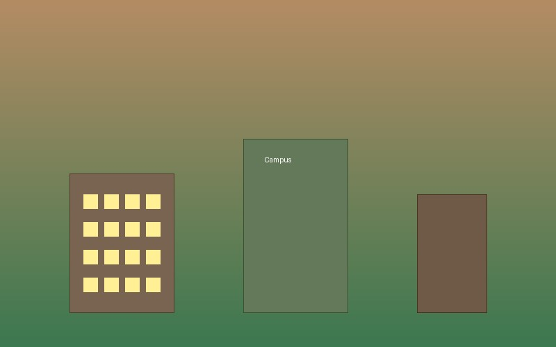
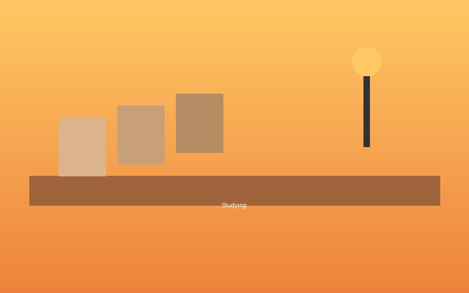

March 20, 2026My First Semester at UMD
Reflecting on the experiences, challenges, and memorable moments from my first semester at the University of Minnesota Duluth. It's been a ride so far and I'm excited to see what comes next.
A Human Resource Management student at UMD sharing thoughts and experiences

March 20, 2026Reflecting on the experiences, challenges, and memorable moments from my first semester at the University of Minnesota Duluth. It's been a ride so far and I'm excited to see what comes next.

March 15, 2026A few practical strategies I've been using to keep track of assignments, deadlines, and everything else going on. Hope some of these help other students out there too.
 March 10, 2026
March 10, 2026
From the lakefront trails to coffee shops downtown, here are some of my favorite spots around Duluth that I think everyone should check out.
This blog is where I write about my experiences as a college student. Whether it's academics, campus life, or just things I find interesting, I hope you enjoy reading. Feel free to check out the other pages and reach out on the Contact page if you want to connect.